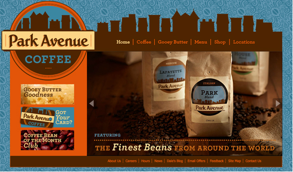

The finest in breakfast treats and coffees since 1971

Donut Delights has been serving C-U with the highest quality donuts and coffees since 1971. Nestled in downtown Urbana, Donut Delights has become a haven for "Gotta have it" breakfast treats. Our donuts are baked fresh twice daily and our coffee's brewed every fifteen minutes. If you have never been to C-U's hidden gem then you are missing out.


Donut Delights was started in 1971 by Melvin Furballski, an immigrant baker form the far east coasto of Poland. Known far and wide for his delicate pastries, Melvin fled his homeland in search of a better life for his family. In 1970 he landed in New York Ciy and by chance he found an open seat on a bus heading west. When an unexpected mechanical failure forced a three day delay in Champaign, Illinois, Furballski saw the need for a donut shop, so he decided to stay and make a new life for himself in Urbana, Illinois. With only one hundred dollars to his name, he found an abandoned breadshop and within two days he had one of a kind donuts flying of the racks faster than he could bake them and things have never slowed down. Now you can find that same great donut recipe plus dozens more still being made with the same love and care as when Donut Delights first opened.

I hope this works?
What's up? Did this work?
Did this work?